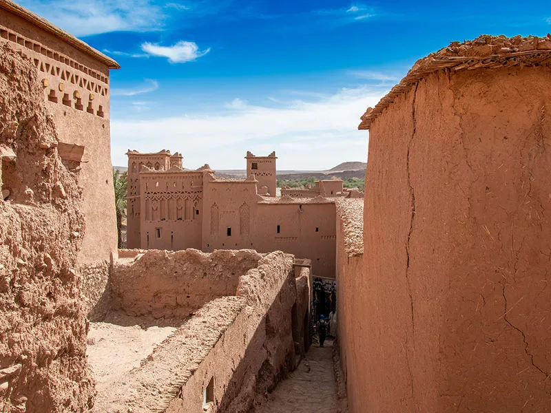
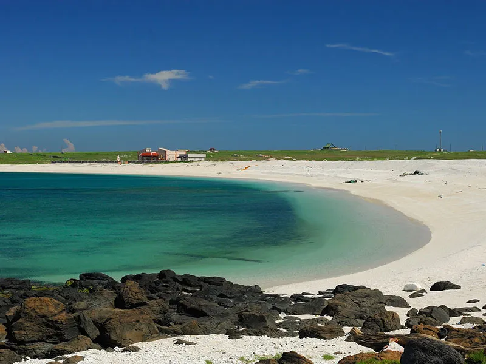
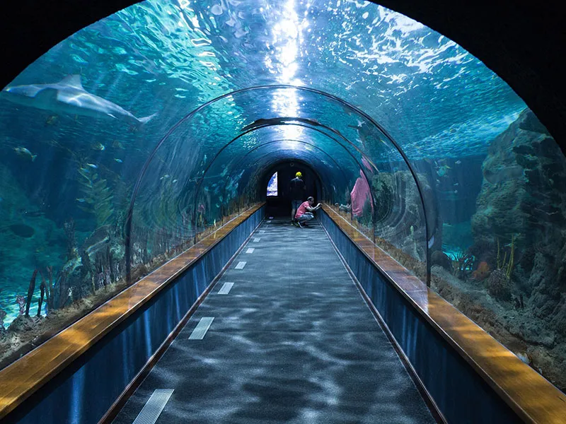
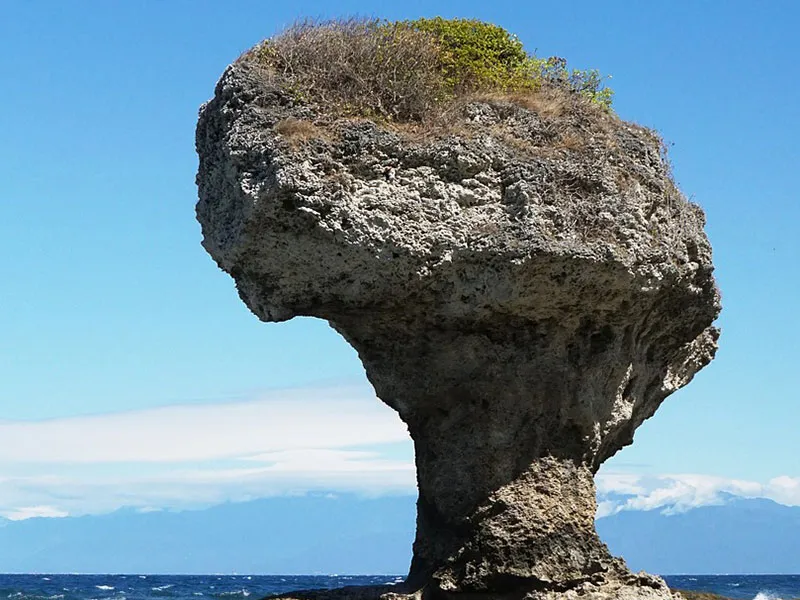
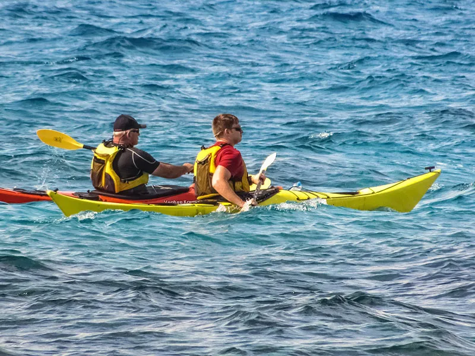
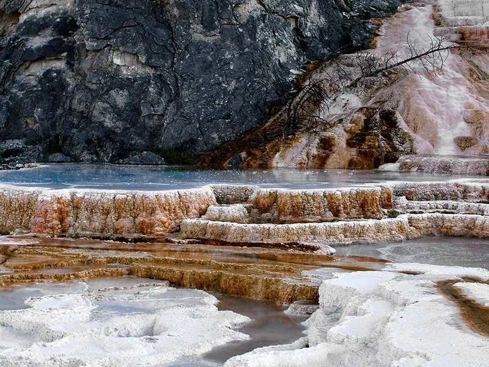
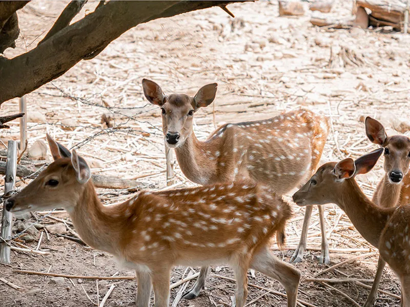

金門景點介紹

金門-沙美摩洛哥
沙美摩洛哥是位於沙美老街的頹屋，走進沙黃色的頹屋建築彷彿置身在中東沙漠之中，大家來到這都說像是到了中東國家摩洛哥，充滿神祕異國風情，每個角度拍出來都超有fu，是年輕人們必訪的熱門打卡點!
澎湖景點介紹

澎湖-青灣情人海灘
這沙灘由珊瑚、貝殼、還有許多七彩的玻璃碎片所組成，這些玻璃碎片受到海浪的長期衝刷，將玻璃的尖銳給磨平了，而呈現一顆顆七彩特殊的玻璃石，當這些七彩的玻璃石陽光直射在沙灘上，呈現五光十色耀眼光線，非常的迷人，傳說情侶在這裡尋找彩色寶石就能祈求永結同心，所以有人稱此沙灘為「情人玻璃海」。

小琉球景點介紹


綠島景點介紹

